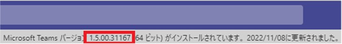

こんにちは。Unified Communications サポート チームです。
いつも Microsoft Teams をご利用いただきありがとうございます。
現在、Microsoft Teams をご利用のお客様において、Teams からファイルをダウンロードする際、ダウンロードしたファイル名が文字化けた形になる状況が発生しております。
本事象はファイル名に UTF-8 エンコード文字が含まれ、デスクトップ 版 Teams のチャネルからダウンロードした時のみに文字化けが発生する事象となります。
同一事象をご確認した場合は、本記事をご参照頂ければと存じます。
1. 回避策について
本事象はファイル名に UTF-8 エンコード文字が含まれ、デスクトップ 版 Teams のチャネルからダウンロードした時のみに発生する事象となります。
そのため、WEB 版 Teams からは正常にダウンロードされる動作となります。
加えて、デスクトップ 版 Teams のチャネルの [ファイル] をクリックして、右側の […] のプルダウンメニューより [SharePoint で開く] からファイルをダウンロードしても、文字化けせずにダウンロードいただくことが可能となります。
当面の回避策としては、こちらの方法をご利用のユーザー様にはご案内を頂けますと幸いでございます。
※なお、2022年11月16日時点で、修正の展開が前倒しで実施することを実現しました（後述）
2. 原因について
本問題の原因としましては、直近で実施致しましたアップデートにコードの問題が含まれており、UTF-8 でエンコードされたファイルをデスクトップ 版 Teams 経由でダウンロードすると、ファイル名が文字化けして表示される問題が内在している状況となっております。
3. 修正の展開について
本件の修正につきましては通常のデスクトップ クライアントの更新プロセスのタイミングである 2022 年 11 月 29 日頃を目処に、配信をされる予定となっておりましたが、お客様への影響度を鑑み、修正の展開を前倒しで実施することが可能になりました。
2022 年 11 月 16 日現在、全テナントに対して修正の展開が開始されております。
なお、修正が展開された状況か否かについては、ご利用の Microsoft Teams デスクトップクライアントのバージョンが “1.5.00.30672” 以上（同じかそれ以上）になっていることを、以下の方法でご確認ください。
Teams デスクトップアプリの写真左側にある […] をクリックします。
[情報] > [バージョン] で修正バージョンである以下と同じかそれ以上のバージョンにアップデートされているかご確認ください。
修正バージョン：1.5.00.30672（この数字より大きいものであれば対象となります）
手順 2 で確認されたバージョンが古い場合には、[アップデートの確認] をクリックします。
[作業中に更新プログラムを確認してインストールします。] と表示され、最新バージョンへアップデートされます。
バージョン 1.5.00.30672 と同じかそれ以上にアップデートされているか否か、再度 [情報] > [バージョン] からご確認ください。
なお、大変恐れ入りますが、修正については順次展開されることから、上記展開開始日時から実際の展開まで、数日のタイムラグが生じる場合がございます。
そのため、直ちに修正されていない場合、しばらくの間、修正の展開をお待ちくださいますようお願い申し上げます。
また、上述の通り、修正が展開中のため、当該アップデートの展開は基本的に自動で行われることとなりますが、対応をお急ぎの場合には、貴社テナント内で修正済みのバージョン（1.5.00.30672）を以下 URL よりダウンロードすることが可能となりますので、ご利用頂けましたら幸いでございます。
Teams (64 bit): https://statics.teams.cdn.office.net/production-windows-x64/1.5.00.30672/Teams_windows_x64.exe
Teams (32 bit): https://statics.teams.cdn.office.net/production-windows/1.5.00.30672/Teams_windows.exe
NOTE:
- 2022 年 10 月 26 日に、初版を公開しました。
- 2022 年 10 月 27 日に、第2版を公開しました。
- 2022 年 11 月 16 日に、第3版を公開しました。
※本情報の内容（添付文書、リンク先などを含む）は、作成日時点でのものであり、予告なく変更される場合があります。